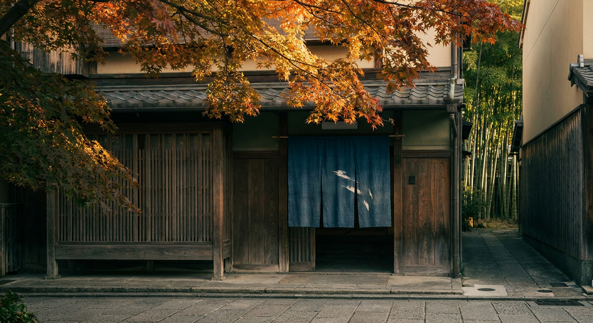

京都のクラフトジン
7蒸溜所・20銘柄を比較
京都府では、京都市内の3蒸溜所と、府の中部・北部（亀岡市・京丹波町・福知山市・京丹後市）の4蒸溜所がジンを造っています。 Gin-DBが収録している京都府の7蒸溜所・20銘柄を、度数・容量・価格・ボタニカル・受賞歴で比べられるようにまとめました。 掲載は公式情報で確認できたものだけです。

蒸溜所の場所
京都市内：SiCX京都東山蒸溜所・大文字蒸溜所・Motoki蒸研
府の中部・北部：京都蒸溜所（亀岡市（2025年10月に新設した生産拠点。創業地は京都市南区））・京都みやこ蒸溜所（船井郡京丹波町）・森の京都蒸溜所（福知山市）・京丹後舞輪源蒸留所（京丹後市弥栄町）
Gin-DBに収録している京都府の蒸溜所・銘柄の数です（京都府のすべてではありません）。 受賞は東京ウイスキー&スピリッツコンペティション（TWSC）2019〜2026年と World Gin Awards 2026 の公式結果から数えました。
1京都蒸溜所（The Kyoto Distillery）
京都蒸溜所は「京都で初となるプレミアムなクラフトジンの蒸溜所」を掲げ、2016年10月に本銘柄を発売。11種のボタニカル（ジュニパーベリー・オリス・赤松・柚子・レモン・山椒（実）・木の芽・生姜・緑茶（玉露）・赤紫蘇・笹の葉）を「6つのエレメント」（礎・柑・凛・辛・茶・芳）に分け、それぞれを別々に蒸溜してからブレンドする独自製法を採用。お米からつくるライススピリッツと伏見の伏流水を使い、ジュニパーベリーの効いたロンドンドライスタイルに「和」のエッセンスを加えています。
本銘柄の発売から2年後の2018年、京都蒸溜所はIWSCで「International Gin Producer of the Year」を受賞しました（公式によれば同賞は2018年・2021年の2度受賞）。
この蒸溜所の銘柄（5）
- 季の美 京都ドライジン45.7% ／ 700ml ／ オープン価格
- 季の美 勢（KI NO BI SEI）54%（公式サイトの表記は54.5%） ／ 700ml ／ オープン価格
- 季のTEA 京都ドライジン45% ／ 700ml ／ オープン価格
- 季の美 エディションK公式の商品一覧には現在掲載なし（商品ページは残っている）46% ／ 700ml ／ オープン価格
- 季の美 エディションG公式の商品一覧には現在掲載なし（商品ページは残っている）46% ／ 700ml ／ オープン価格
- World Gin Awards 2026 Gold・日本最高賞（Classic Gin）：季の美 京都ドライジン
- World Gin Awards 2026 Gold・日本最高賞（Navy Gin）：季の美 勢（KI NO BI SEI）
- TWSC 2019 銅賞：季の美 京都ドライジン
- TWSC 2019 銅賞：季の美 勢
2京都みやこ蒸溜所（京都酒造株式会社）
京都みやこ蒸溜所（京都酒造株式会社、京都府船井郡京丹波町）の京都ジン。10種ボタニカル：国産ニッキ・抹茶・なでしこ等で構成。46%/700ml/¥3,960（税込・希望小売価格）。
国産ニッキや抹茶、京都府の草花「なでしこ」をはじめとした10種類のボタニカルを使用。公式は「飲みやすさの中にスパイシーさ、『なでしこ』のやさしい香り」が感じられると紹介しています。
この蒸溜所の銘柄（2）
- 京都ジン ハイクラス京都府内限定販売（公式FAQ）46% ／ 700ml ／ ¥3,960（税込・希望小売価格）
- 京都ジン京都府内限定販売（公式FAQ）40% ／ 700ml ／ ¥1,980（税込・希望小売価格）
3森の京都蒸溜所
森の京都蒸溜所（京都府福知山市）の旗艦銘柄。26種ボタニカルが生む「4層の香味」が特徴で、柚子・みかん・山椒・生姜・和漢12種・京の発酵素材が段階的に現れる設計。「WELLNESS」コンセプトの「京和漢」シリーズで、ジュニパーベリーを効かせた“王道”の味を追求しています。45%/700ml/¥5,500（税込・公式）。
森の京都蒸溜所は京素材・和漢ボタニカル・京の発酵素材を組み合わせたクラフトジンを造る蒸溜所。本銘柄は2025年のIWSCで金賞を受賞しています。
この蒸溜所の銘柄（2）
- 京和漢 DRY GIN FOREST OF KYOTO45% ／ 700ml ／ ¥5,500（税込・公式）
- 京和漢 DRY GIN MOON OF KYOTO45% ／ 700ml ／ ¥5,500（税込・公式）
- World Gin Awards 2026 Silver（Contemporary Style Gin）：京和漢 DRY GIN FOREST OF KYOTO
- TWSC 2026 金賞：京和漢 DRY GIN FOREST OF KYOTO
4京丹後舞輪源蒸留所（KYOTANGO MAIRINGEN DISTILLERY）
京丹後舞輪源蒸留所（京都府京丹後市弥栄町）の旗艦銘柄。標高620m、300種類以上の薬草薬樹が自生する丹後半島の山林で朝手摘みした植物を、フレッシュなまま蒸留。14種ボタニカル（ジュニパーベリー・石焙煎クマザサ・蒸留当日に摘み取ったクロモジ・農薬不使用レモン等）を使い、仕込み水には山頂の「超軟水」と山麓の「超硬水」を使っています。47%/700ml/¥5,610（税込・公式）。
公式は「手間を惜しまず、時間をかけて1本1本を丁寧に仕上げています」と説明しています。「いま必要な豊かさとは何か」を問うジンづくりを掲げ、見学・購入は事前予約制です。2025年SFWSCで「Best Overall Gin（全出品ジンの最高賞）」「Best Japanese Gin」「Double Gold」の三冠を獲得しています。
この蒸溜所の銘柄（3）
- MAIRINGEN FRESH CRAFT GIN47% ／ 700ml ／ ¥5,610（税込・公式）
- MAIRINGEN FRESH CRAFT GIN47% ／ 200ml ／ ¥2,310（税込・公式）
- MAIRINGEN EXTRA FRESH CRAFT GIN 2024限定377本47% ／ 700ml ／ ¥29,700（税込・公式）
5SiCX京都東山蒸溜所（株式会社FEC）
SiCX京都東山蒸溜所（株式会社FEC、京都府京都市東山区）の旗艦銘柄。メインボタニカルは無農薬ヨモギ。10種ボタニカル：ジュニパー・無農薬ヨモギ・クベブペッパー・コリアンダー・レモンピール・オレンジピール・レモンバーベナ・カルダモン・花椒・白檀。45%/500ml/¥4,980（税抜・公式）。
2022年9月に開業したSiCX京都東山蒸溜所の銘柄で、公式は本銘柄を「SiCXを代表する1本」と位置づけています。
この蒸溜所の銘柄（3）
- KYOTO EBISU GIN45% ／ 500ml ／ ¥4,980（税抜・公式）
- SiCX KYOTO LEMON CITRIC ACID GIN45% ／ 500ml ／ ¥3,980（税抜・公式）
- SiCX KYOTO SPICE MAGIC GIN45% ／ 500ml ／ ¥3,980（税抜・公式）
6松井酒造株式会社 大文字蒸溜所
この蒸溜所の銘柄（3）
- 京都ジン 輪廻 The Origin43% ／ 720ml／300ml ／ 720ml ¥5,060／300ml ¥2,640（税込・公式オンラインショップ、包装なし）
- 京都ジン 輪廻 In Bloom43% ／ 720ml／300ml ／ 720ml ¥6,160／300ml ¥3,190（税込・公式オンラインショップ、包装なし）
- 京都ジン 輪廻 Old Tom MIKE43% ／ 720ml／300ml ／ 720ml ¥5,280／300ml ¥2,750（税込・公式オンラインショップ、包装なし）
- TWSC 2026 最高金賞：京都ジン 輪廻 オールドトム・ミケ
- TWSC 2026 金賞：京都ジン 輪廻 イン・ブルーム
- TWSC 2026 銅賞：京都ジン 輪廻 オリジン
- TWSC 2025 最高金賞：京都ジン 輪廻 オールドトム・ミケ
- TWSC 2025 銀賞：京都ジン 輪廻 イン・ブルーム
- TWSC 2025 銀賞：京都ジン 輪廻 オリジン
7Motoki蒸研株式会社
この蒸溜所の銘柄（2）
- オーディナリー（オーディナリージン）yumarrestのシグネチャージン45% ／ 500ml／200ml／50ml ／ 500ml ¥4,950／200ml ¥2,640／50ml ¥880（税込・公式オンラインショップ）
- オーディナリーKING45% ／ 500ml／200ml／50ml ／ 500ml ¥6,600／200ml ¥3,520／50ml ¥1,100（税込・公式オンラインショップ）
京都のクラフトジン 20銘柄の比較表
度数・容量・価格は各蒸溜所の公式情報です。「オープン価格」「市場実勢」は公式の希望小売価格が無いものです。銘柄名から詳しいページへ移れます。
| 銘柄（蒸溜所） | 度数 | 容量 | 価格（公式・参考） | 主なボタニカル |
|---|---|---|---|---|
| 季の美 京都ドライジン京都蒸溜所 | 45.7% | 700ml | オープン価格 | ジュニパー、オリス、赤松、玉露、ゆず、レモン、山椒、生姜、笹の葉、赤しそ、木の芽 |
| 季の美 勢（KI NO BI SEI）京都蒸溜所 | 54%（公式サイトの表記は54.5%） | 700ml | オープン価格 | 季の美と同11種 |
| 季のTEA 京都ドライジン京都蒸溜所 | 45% | 700ml | オープン価格 | 玉露・碾茶を強調 |
| 季の美 エディションK京都蒸溜所 | 46% | 700ml | オープン価格 | 季の美 京都ドライジンを、スコットランド・アイラ島のキルホーマン蒸溜所のバーボン樽で熟成 |
| 季の美 エディションG京都蒸溜所 | 46% | 700ml | オープン価格 | アンリ・ジロー樽熟成 |
| 京都ジン ハイクラス京都みやこ蒸溜所 | 46% | 700ml | ¥3,960（税込・希望小売価格） | 国産ニッキ、抹茶、なでしこ等10種 |
| 京都ジン京都みやこ蒸溜所 | 40% | 700ml | ¥1,980（税込・希望小売価格） | 国産ニッキ、抹茶等8種 |
| 京和漢 DRY GIN FOREST OF KYOTO森の京都蒸溜所 | 45% | 700ml | ¥5,500（税込・公式） | 26種ボタニカル4層構成（柚子、みかん、山椒、生姜、和漢12種、京都発酵素材） |
| 京和漢 DRY GIN MOON OF KYOTO森の京都蒸溜所 | 45% | 700ml | ¥5,500（税込・公式） | 50種ボタニカル（ジュニパー、レモングラス、メリッサ、パンダンリーフ、ニゲラ、和漢12種… |
| MAIRINGEN FRESH CRAFT GIN京丹後舞輪源蒸留所 | 47% | 700ml | ¥5,610（税込・公式） | ジュニパーベリー・石焙煎熊笹・クロモジ等（蒸留当日に採取するクロモジや、熱した石で急速焙… |
| MAIRINGEN FRESH CRAFT GIN京丹後舞輪源蒸留所 | 47% | 200ml | ¥2,310（税込・公式） | ジュニパーベリー・石焙煎熊笹・クロモジ等（14種のボタニカル） |
| MAIRINGEN EXTRA FRESH CRAFT GIN 2024京丹後舞輪源蒸留所 | 47% | 700ml | ¥29,700（税込・公式） | 京丹後産ネズミサシ、京丹後産ハイネズ、京丹後産生ハチミツ（すべて京丹後産） |
| KYOTO EBISU GINSiCX京都東山蒸溜所 | 45% | 500ml | ¥4,980（税抜・公式） | ジュニパーベリー 無農薬ヨモギ クベブペッパー コリアンダーシード レモンピール オレン… |
| SiCX KYOTO LEMON CITRIC ACID GINSiCX京都東山蒸溜所 | 45% | 500ml | ¥3,980（税抜・公式） | ブラックレモン、ギニアペッパー、カルダモン、クローブ、シナモン、コリアンダーシード、生姜… |
| SiCX KYOTO SPICE MAGIC GINSiCX京都東山蒸溜所 | 45% | 500ml | ¥3,980（税抜・公式） | 27種類のスパイスのみで構成（5つのグループに分類） |
| 京都ジン 輪廻 The Origin大文字蒸溜所 | 43% | 720ml／300ml | 720ml ¥5,060／300ml ¥2,640（税込・公式オンラインショップ、包装なし） | ジュニパーベリー、グレープフルーツ、檸檬、大原の紫蘇、胡麻など |
| 京都ジン 輪廻 In Bloom大文字蒸溜所 | 43% | 720ml／300ml | 720ml ¥6,160／300ml ¥3,190（税込・公式オンラインショップ、包装なし） | オレンジを始め数種のボタニカル、百合、薔薇（酒粕由来スピリッツ使用。全リストは非公開） |
| 京都ジン 輪廻 Old Tom MIKE大文字蒸溜所 | 43% | 720ml／300ml | 720ml ¥5,280／300ml ¥2,750（税込・公式オンラインショップ、包装なし） | 公式の味の説明に「クロモジ、ジュニパーベリーの香り」。原材料：スピリッツ、和三盆 |
| オーディナリー（オーディナリージン）Motoki蒸研 | 45% | 500ml／200ml／50ml | 500ml ¥4,950／200ml ¥2,640／50ml ¥880（税込・公式オンラインショップ） | 京ひのき、桜の葉、八女緑茶、尾道のレモンなど |
| オーディナリーKINGMotoki蒸研 | 45% | 500ml／200ml／50ml | 500ml ¥6,600／200ml ¥3,520／50ml ¥1,100（税込・公式オンラインショップ） | オーディナリーと同じボタニカルを再度漬け込み再蒸溜（ダブルバッチ）。金箔入り（500ml… |
受賞の記録（TWSC・World Gin Awards 2026）
TWSCで京都の蒸溜所の銘柄が受けた賞は9件（うち最高金賞2件）、World Gin Awards 2026 では3銘柄が受賞しています。 銘柄名は主催者の公式表記のままです。ほかのコンテストの受賞は各蒸溜所の紹介と銘柄ページに載せています。
| 年 | コンテスト | 賞 | 銘柄（公式表記） | 部門 |
|---|---|---|---|---|
| 2026 | World Gin Awards | Gold・日本最高賞 | 季の美 京都ドライジン | Classic Gin |
| 2026 | World Gin Awards | Gold・日本最高賞 | 季の美 勢（KI NO BI SEI） | Navy Gin |
| 2026 | World Gin Awards | Silver | 京和漢 DRY GIN FOREST OF KYOTO | Contemporary Style Gin |
| 2026 | TWSC | 最高金賞 | 京都ジン 輪廻 オールドトム・ミケ | ジン／ジャパニーズ |
| 2026 | TWSC | 金賞 | 京和漢 DRY GIN FOREST OF KYOTO | ジン／ジャパニーズ |
| 2026 | TWSC | 金賞 | 京都ジン 輪廻 イン・ブルーム | ジン／ジャパニーズ |
| 2026 | TWSC | 銅賞 | 京都ジン 輪廻 オリジン | ジン／ジャパニーズ |
| 2025 | TWSC | 最高金賞 | 京都ジン 輪廻 オールドトム・ミケ | ジン／ジャパニーズ |
| 2025 | TWSC | 銀賞 | 京都ジン 輪廻 イン・ブルーム | ジン／ジャパニーズ |
| 2025 | TWSC | 銀賞 | 京都ジン 輪廻 オリジン | ジン／ジャパニーズ |
| 2019 | TWSC | 銅賞 | 季の美 京都ドライジン | ジン／ジャパニーズ |
| 2019 | TWSC | 銅賞 | 季の美 勢 | ジン／ジャパニーズ |
TWSC 日本のジン受賞データベース・World Gin Awards の日本勢もあわせてどうぞ。
京都のクラフトジンの選び方
700mlで税込価格が公式で確認できる銘柄のうち、いちばん手頃なのは京都ジン（京都みやこ蒸溜所・40%・¥1,980）です。ただし京都府内限定販売（公式FAQ）です。
京都の蒸溜所でTWSCの最高金賞を受けたのは「京都ジン 輪廻 オールドトム・ミケ」（2025・2026年）です。World Gin Awards 2026 では、季の美 京都ドライジン・季の美 勢（KI NO BI SEI）が部門の日本最高賞（Gold）を受けています。
収録銘柄でいちばん度数が高いのは季の美 勢（KI NO BI SEI）（54%（公式サイトの表記は54.5%））です。
玉露・抹茶などのお茶、山椒、柚子、赤紫蘇、ヨモギ、クロモジなど、各銘柄のボタニカルは下の比較表とボタニカル逆引きで確かめられます。
ふるさと納税で選べる京都のジン
京都府の4蒸溜所で、ジンの返礼品を確認しています。寄附額は確認できた返礼品のうちいちばん安いもので、容量やセット内容は返礼品ごとに違います。
- 京都蒸溜所（季の美 京都ドライジン）ふるさとチョイス¥9,000〜（200ml・京都府京都市）（2026-09-04確認）
- 京都みやこ蒸溜所（京都ジン）ふるさとチョイス¥10,000〜（700ml・京都府京丹波町）（2026-09-04確認）
- 森の京都蒸溜所（京和漢 DRY GIN）ふるさとチョイス¥19,000（700ml・京都府福知山市）（2026-09-04確認）
- 京丹後舞輪源蒸留所（MAIRINGEN FRESH）ふるさとチョイス¥9,000〜（200ml・京都府京丹後市）（2026-09-04確認）
ふるさと納税で選べるクラフトジン一覧でポータルごとに確かめられます。
京都の蒸溜所を訪ねる
京都市の「The HOUSE of KI NO BI」と、京丹後市の京丹後舞輪源蒸留所の見学情報は、蒸溜所見学ガイドにまとめています。 見学・購入の受付は変わることがあるので、訪ねる前に各蒸溜所の公式サイトで確かめてください。
よくある質問
Q1. 京都のクラフトジンの蒸溜所はいくつありますか？
Gin-DBが収録しているのは京都府の7か所（京都蒸溜所・京都みやこ蒸溜所・森の京都蒸溜所・京丹後舞輪源蒸留所・SiCX京都東山蒸溜所・大文字蒸溜所・Motoki蒸研）です。京都府のすべてを網羅したものではありません。
Q2. 季の美はどこで造られていますか？
京都蒸溜所（The Kyoto Distillery）です。2014年に京都市南区で設立され、2025年10月には京都府亀岡市に新しい生産拠点の蒸溜所ができました。季の美 京都ドライジンの発売は2016年10月です。
Q3. 京都のジンで受賞しているのはどれですか？
TWSC（2019〜2026年）で京都の蒸溜所の銘柄が受けた賞は9件、うち最高金賞は2件です。World Gin Awards 2026 では3銘柄が受賞しています。一覧はこのページの「受賞の記録」にあります。
Q4. 京都のクラフトジンはふるさと納税で選べますか？
返礼品として確認できた蒸溜所があります。このページの「ふるさと納税」の節と、Gin-DBのふるさと納税ページで寄附額とポータルを確かめられます。
京都のクラフトジンを買う
各蒸溜所の代表的な1本です。ほかの銘柄は各銘柄ページから購入先を開けます。在庫・価格はリンク先で確かめてください。
京都ジン ハイクラス京都みやこ蒸溜所
KYOTO EBISU GINSiCX京都東山蒸溜所
PR ／ アフィリエイトリンクを含みます。